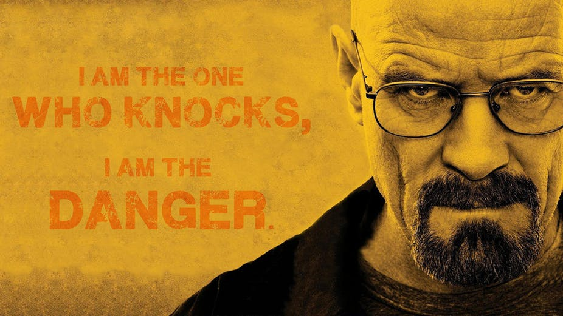

Prof. Sergio Marquina |
(H.O.D) MBA DEPARTMENTMr. Sergio is highly intelligent and meticulous. He appears to be very ambitious about the bank heist and had been planning it for several years. Once he recruits his dream team, he makes everyone religiously follow a strict schedule, complete with fundamental rules to prepare for and execute the heist. His perfectionist attitude is apparent through his careful consideration and planning for all possible scenarios that could arise during the heist. This forward-thinking approach helps him in his strive for perfection, where he urges the team to 'stick to the plan' in every situation. |

Prof. Walter White |
BIO. TECH. ENGINEERINGWalter White was an only child. Walt's father died of Huntington's disease when he was six years old. He studied chemistry at the California Institute of Technology, where he conducted research on proton radiography that helped a team win a Nobel Prize in Chemistry in 1985. After graduate school, Walt founded the firm Gray Matter Technologies with Elliott Schwartz (Adam Godley), his former classmate and close friend. Around this time, Walt dated his lab assistant, Gretchen (Jessica Hecht). Gretchen and Elliott later married and made a fortune, much of it from Walt's research. |
\
Prof. Tony Stark |
COMPUTER SCIENCE(Artificial intelligence)Anthony Edward "Tony" Stark was born on May 29, 1970, in Manhattan, New York to Howard Stark, a famous genius inventor and businessman, and Maria Stark (née Carbonell), a New York socialite and philanthropist. Growing up under the eye of family butler Edwin Jarvis, his life was characterized by a cold and affectionless relationship with his father. This instead embittered Stark, who felt that his father was taking more pride in his creations than in his family. Stark proved to be a brilliant and unique child prodigy, he attended MIT for two years starting at age 14. |
Prof. Rio |
COMPUTER SCIENCE (CYBER SECURITY)Mr. Rio is a very skilled hacker, having attacked multiple websites and being recruited as the tech expert for a very complicated heist. He is shown to have enough knowledge of the deep web. Rio was born in 1997, his nickname given by his mother was Rayo. At young age he became interested in computers, eventually becoming a hacker. In 2010 he engaged in multiple cyber-attacks, which were all done discrete as the police couldn’t track him. |